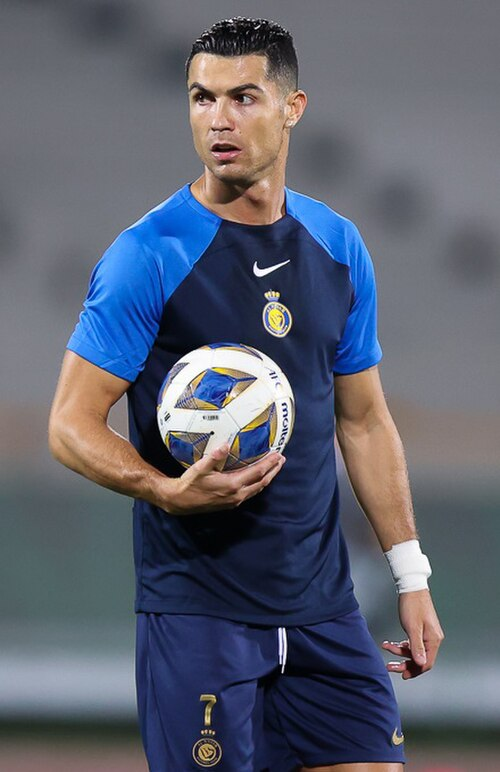
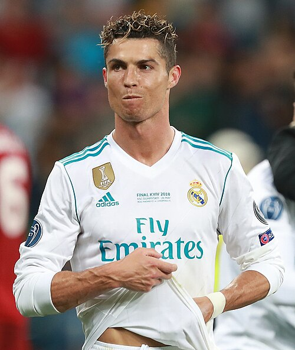
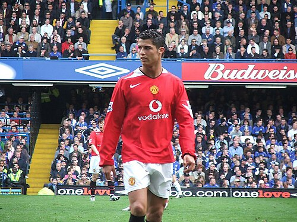
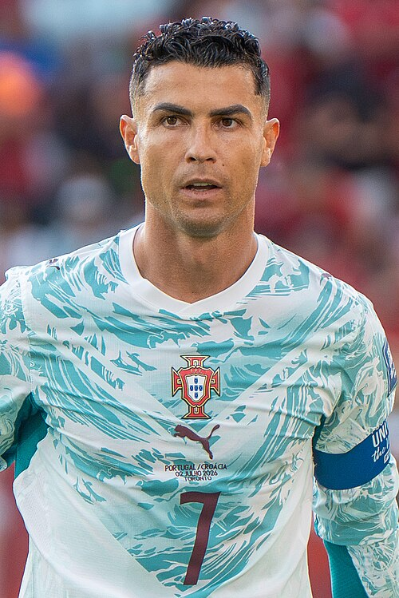
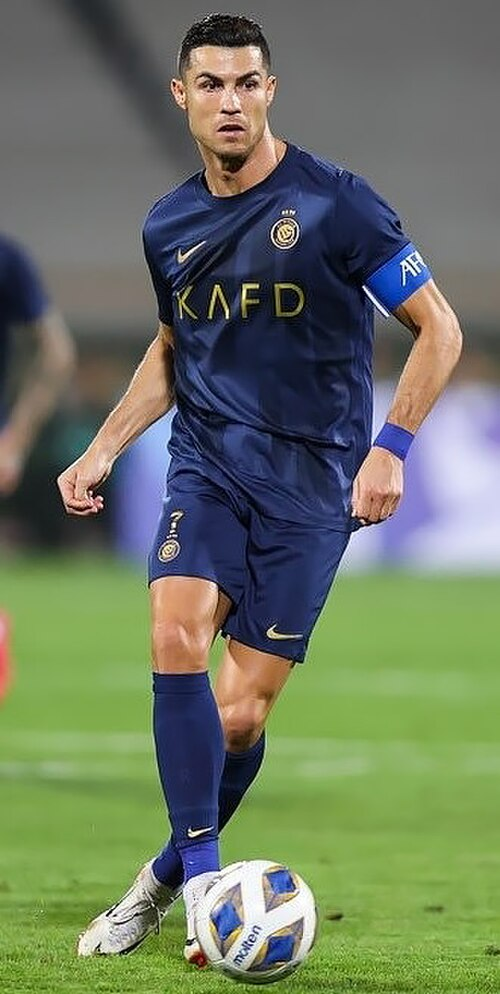

El hombre más decisivo
Más de 900 goles en su carrera. Cinco Balones de Oro. Una leyenda que trasciende fronteras.
Descubre su historiaBiografía

Cristiano Ronaldo dos Santos Aveiro, nacido el 5 de febrero de 1985 en Funchal, Madeira (Portugal), es ampliamente considerado uno de los mejores futbolistas de la historia del deporte.
Creció en un humilde barrio de Funchal, donde desde temprana edad mostró una pasión desbordante por el fútbol. A los 12 años se trasladó a Lisboa para unirse al Sporting CP, abandonando su familia y su hogar con el sueño de convertirse en profesional.
Su talento fue innegable. En 2003, un amistoso contra el Manchester United cambió su vida para siempre: los jugadores del United le pidieron a Sir Alex Ferguson que lo fichara de inmediato. Desde ese momento, Ronaldo escribió una de las carreras más gloriosas del deporte mundial.
A lo largo de más de dos décadas de carrera, ha jugado en los clubes más importantes del mundo, ha representado a Portugal en múltiples copas del mundo y eurocopas, y ha acumulado récords que parecen inalcanzables: más de 900 goles oficiales, cinco Balones de Oro y cinco Ligas de Campeones de la UEFA.
Datos personales
- Nombre completo: Cristiano Ronaldo dos Santos Aveiro
- Nacimiento: 5 de febrero de 1985, Funchal, Madeira, Portugal
- Altura: 1,87 m
- Posición: Delantero / Extremo derecho
- Número icónico: 7
- Selección: Portugal (máximo goleador histórico)
- Hijos: Cristiano Jr., twins Eva y Mateo, Alana Martina, Bella y Cristianinho
Trayectoria
Haz clic en cada año para descubrir los hitos más importantes de su carrera
Con tan solo 17 años, Ronaldo debuta con el primer equipo del Sporting CP en la Primeira Liga. Su velocidad, regate y capacidad goleadora hacen que rápidamente se convierta en una sensación del fútbol portugués.
Tras impresionar en un amistoso contra el Manchester United, Sir Alex Ferguson ficha al joven portugués por 15 millones de euros. En Old Trafford hereda la mítica camiseta número 7 que antes usaron leyendas como Eric Cantona y David Beckham.
Con el Manchester United, Ronaldo conquista su primera Liga de Campeones, derrotando al Chelsea en la final de Moscú. Esa temporada marca su transformación de juvenil talentoso a jugador definitivo del más alto nivel.
Ronaldo es galardonado con su primer Balón de Oro tras una temporada espectacular: 42 goles en todas las competiciones. También gana la Premier League y la Champions League con el United, completando un triplet histórico.
El Real Madrid paga 94 millones de euros, un récord mundial en esa época, para llevar a Ronaldo al Santiago Bernabéu. Allí comienza una era dorada que lo convertirá en el máximo goleador de la historia del club.
El Real Madrid conquista la décima Champions League, con Ronaldo marcando en la final contra el Atlético de Madrid. Anota 17 goles en esa Champions League, un récord absoluto de la competición que aún nadie ha superado.
El sueño hecho realidad: Portugal gana la Eurocopa 2016 en Francia. A pesar de una lesión en la final contra la anfitriona, Ronaldo se convierte en capitán y líder de un equipo que escribe una de las páginas más emotivas de la historia del fútbol europeo.
Ronaldo gana su quinta Liga de Campeones con el Real Madrid, completando un trilogy de títulos consecutivos (2016, 2017, 2018). Tras isso, ficha por la Juventus de Turín por 112 millones de euros para un nuevo reto en la Serie A italiana.
Ronaldo regresa a Old Trafford, el club donde se convirtió en una estrella mundial. Aunque el equipo atraviesa un momento deportivo difícil, el portugués sigue demostrando su capacidad goleadora al más alto nivel.
Ronaldo ficha por el Al-Nassr de Arabia Saudita, iniciando una nueva etapa en su carrera. En septiembre de 2024 marca su gol número 900 en partido oficial con la selección de Portugal, un hito sin precedentes en la historia del fútbol.
Con más de 930 goles en su carrera, Ronaldo continúa demostrando que la edad es solo un número. Sigue siendo una referencia mundial del fútbol y el máximo goleador de la historia de las selecciones nacionales con más de 130 goles por Portugal.
Estadísticas de Carrera
Goles por club y selección
| Equipo | Período | Partidos | Goles | Asistencias |
|---|---|---|---|---|
| Sporting CP | 2002-2003 | 31 | 5 | 6 |
| Manchester United | 2003-2009 | 292 | 118 | 69 |
| Real Madrid | 2009-2018 | 438 | 450 | 131 |
| Juventus | 2018-2021 | 134 | 101 | 22 |
| Manchester United | 2021-2022 | 54 | 27 | 2 |
| Al-Nassr | 2023-actualidad | 90 | 88 | 20 |
| Portugal (selección) | 2003-actualidad | 217 | 136 | 44 |
Galería
Momentos icónicos de la carrera de CR7




